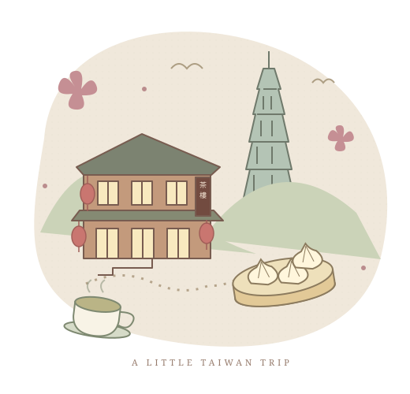

♨
STEAMED & WARM小籠包
スープたっぷり。熱いので、れんげにのせて少しずつ。
中山・信義で探すさくらちゃんとご家族へ。
お茶を飲んで、路地を歩いて、ときどきひと休み。
台湾での時間が、すてきな思い出になりますように。
台北 ＋ 九份 · 3 / 4 / 5 DAYS

ゆっくり、よりみち。01 — YOUR LITTLE JOURNEY
滞在日数に合わせて、ちょうどいい台北を。
到着日・帰国日を含むモデルプランです。初日は午後到着、最終日は夕方便以降を想定。便の時間に合わせて短くしてください。
全部まわらなくても大丈夫。気になるところだけ、どうぞ。
02 — A TASTE OF TAIWAN
みんなでシェアして、いろいろ少しずつ。
スープたっぷり。熱いので、れんげにのせて少しずつ。
中山・信義で探す九份ではもちもちの芋圓。街歩きの合間には、やさしい甘さの豆花を。
九份・台北市内ご家族と、景色を見ながらひと息。香りの違いも旅の楽しみ。
九份・大稻埕旅の最後に選ぶ、おいしいおみやげ。原材料と賞味期限もチェック。
帰国前のお買いもの食べものは候補です。具体的なお店や価格は当日のメニューで確認してください。
03 — GOOD TO KNOW
ちょっと知っていると、もっと気楽に。
坂道と階段があります。雨の日は滑りやすいので、疲れたら茶樓で休憩。階段が難しい場合は市内プランに変更を。
市内はMRTを中心に。九份は往復の移動時間も確保し、帰りの交通を先に確認。荷物はホテルに預けると身軽です。
パクチー抜き：不要香菜
辛くしないで：不要辣
砂糖なし：無糖
アレルギーは別途、食材名を伝えて確認を。
小さなお店用に台湾ドルの現金を少し。雨が強い日は屋内の買いものやカフェへ。営業日・予約・天気は出発前に確認しましょう。
予定どおりじゃなくても、それもすてきな旅。
台湾を、みんなのペースで楽しんでね。
これは提案用の旅のしおりです。宿泊地・旅行日・便は未定のため、時間と予算は目安で、予約や営業を保証するものではありません。九份は台北市外（新北市）です。情報確認：2026年10月28日。